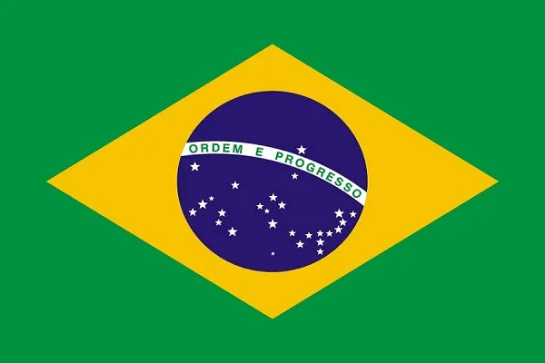

Trabalho infantil é toda forma de trabalho realizado por crianças e adolescentes abaixo da idade mínima permitida, de acordo com a legislação de cada país. No Brasil, o trabalho é proibido para quem ainda não completou 16 anos, como regra geral. Quando realizado na condição de aprendiz, é permitido a partir dos 14 anos. Se for trabalho noturno, perigoso, insalubre ou atividades da lista TIP (lista de piores tipos de trabalho infantil), a proibição se estende aos 18 anos incompletos. Igualmente preocupantes são os tipos de trabalho realizados por crianças e adolescentes frequentemente admitidos pela sociedade, como o comerciante ambulante, o guardador de carros e o guia turístico, tornando o trabalho na infância invisível, aumentando seu ciclo de aceitação. De acordo o IBGE, 2.778 milhões de adolescentes de 14 a 17 anos estavam em situação de trabalho no Brasil em 2014. Porém, apenas 503 mil estavam no trabalho permitido por lei, sendo 212 mil na condição de aprendiz e outros 291 mil como empregados não aprendizes. Os demais (82%) estavam trabalhando sem proteção social, fora da escola e/ou nas piores formas de trabalho infantil. Já em 2022, o Brasil tinha 1,9 milhão de crianças e adolescentes com 5 a 17 anos de idade (ou 4,9% desse grupo etário) em situação de trabalho infantil. Esse contingente havia caído de 2,1 milhões (ou 5,2%) em 2016 para 1,8 milhão (ou 4,5%) em 2019, mas cresceu em 2022.
As consequências do trabalho infantil na vida de crianças e adolescentes são inúmeras. Além de muitas vezes reproduzir o ciclo de pobreza da família, o trabalho infantil prejudica a aprendizagem da criança, quando não a tira da escola e a torna vulnerável em diversos aspectos, incluindo a saúde, exposição à violência, assédio sexual, esforços físicos intensos, acidentes com máquinas e animais no meio rural, entre outros. A vivência plena da infância é essencial para o desenvolvimento físico, cognitivo, emocional e social das crianças, impactando diretamente na construção de uma vida adulta saúdavel. O que acontece nesta etapa do desenvolvimento pode gerar traumas irreversíveis. A partir disso a IPPI trouxe dados e gráficos atuais que mostram visualmente a situação do trabalho infantil em diversos âmbitos e setores no Brasil e de forma explicativa mostra o quanto isso afeta a sociedade de forma velada.
Av. Padre Antônio Brunetti, 1360
Vila Rio Branco - 13478-700 - Itapetininga - SP
15 3275-7920
Instituto de Pesquisa e Proteção à Infância, inscrita no CNPJ sob o nº 00.111.222/0001-23, é uma organização sem fins lucrativos que, em conjunto com outras instituições, visa a vigilança, pesquisa e combate do trabalho infantil no Brasil.
2024 © Todos os direitos reservados. IPPI